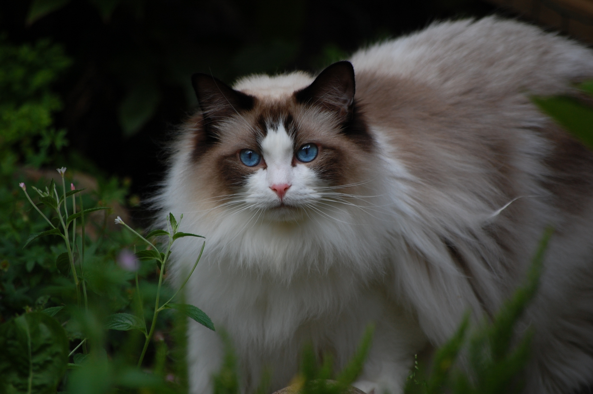

Kucing Domestik
Indonesia memiliki jenis kucing domestik.Kucing ini sering berkeliaran di jalanan dan sangat mudah dikenali karaktersitiknya.
Read
Kucing Persia
Kucing ini mempunyai ciri bulu yang panjang dan lembut, serta muka yang bulat dan hidung menggemaskan.
Read
Kucing Anggora
Kucing anggora yang biasa kita lihat punya bulu yang panjang dan halus dengan warna putih bersih.
Read
Kucing Maine Coon
Kucing ini punya badan yang besar dan tinggi. Kucing jantan maine coon bisa punya berat mencapai 7-10 kg.
Read

Kucing Ragdoll
Kucing Ragdoll adalah jenis kucing yang berasal dari Amerika Serikat.Asal nama Ragdoll diambil dari sifatnya yang sangat jinak.
ReadKucing Siam
Kucing ini memiliki mata biru, suara lembut, tubuh ramping, ekor panjang, dan bulunya pendek serta memiliki titik gelap.
Read